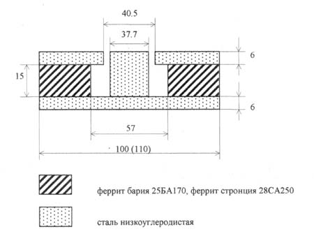
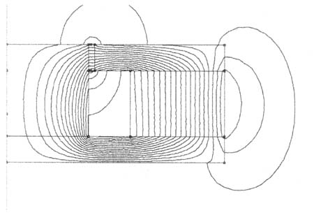
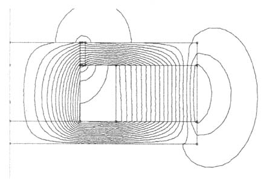
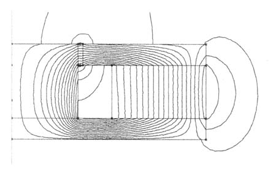
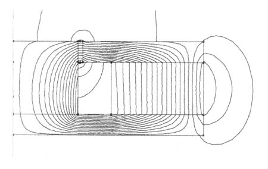
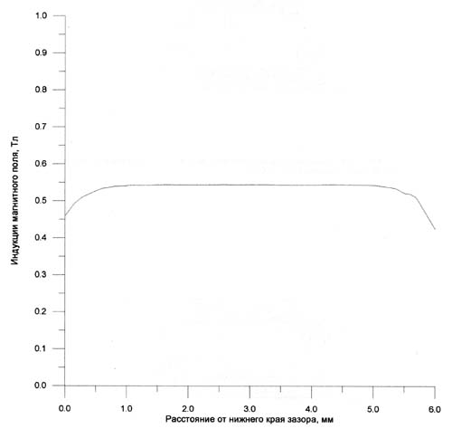
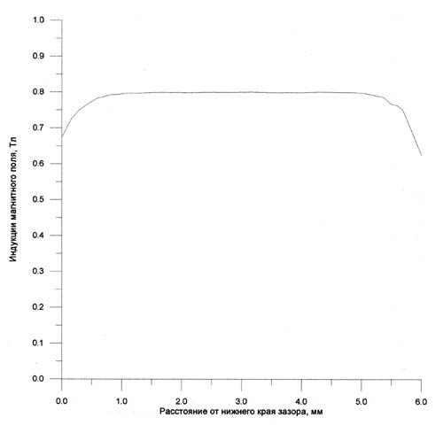
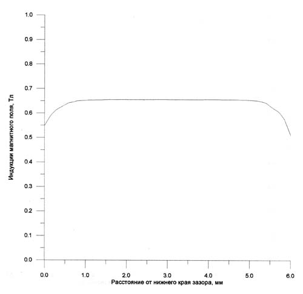
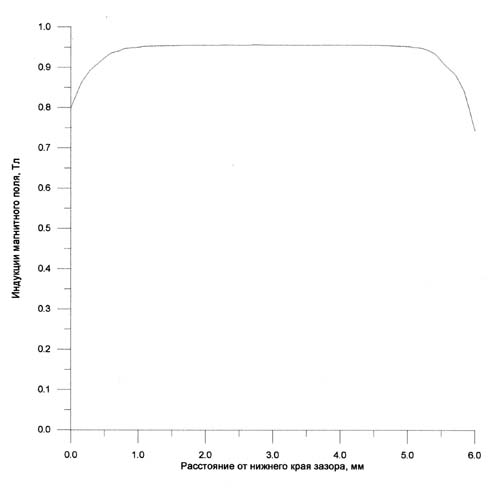

Расчет магнитного поля в
магнитной системе динамической
головки с ферритовым кольцом методом конечных элементов:
распределение магнитного потока, магнитная индукция в зазоре
На рис. 1 показан чертеж магнитной системы динамической головки в разрезе.

Рис. 1. Магнитная система динамической головки (вариант 1 - диаметр 100 мм, вариант 2 - диаметр 110 мм).
Магнитная система состоит из кольцевого постоянного магнита, круглого стального основания, верхнего стального кольца, центрального цилиндрического керна. Между верхним кольцом и керном имеется зазор, в котором размещается катушка динамической головки. Свойства материалов приняты следующими:
Феррит бария 25БА170:
Феррит стронция 28СА250:
Сталь низкоуглеродистая:
Расчет распределения магнитного поля и величины индукции в зазоре производился методом конечных элементов [1, 2, 4, 5]. Распределение магнитного потока в магнитной системе динамической головки приведено на рис. 2 - 5 (для упрощения показана половина сечения магнитной системы). На рис. 6 - 9 приведены графики зависимости магнитной индукции в зазоре магнитной системы от аксиальной координаты (ось абсцисс соответствует центру зазора с направлением снизу вверх, нулевая точка - нижний край зазора).

Рис. 2. Распределение магнитного потока в системе с кольцом из материала 25БА170, внешний диаметр кольца 100 мм.

Рис. 3. Распределение магнитного потока в системе с кольцом из материала 28СА250, внешний диаметр кольца 100 мм.

Рис. 4. Распределение магнитного потока в системе с кольцом из материала 25БА170, внешний диаметр кольца 110 мм.

Рис. 5. Распределение магнитного потока в системе с кольцом из материала 28СА250, внешний диаметр кольца 110 мм.

Рис. 6. Распределение магнитной индукции в зазоре системы с кольцом из материала 25БА170, внешний диаметр кольца 100 мм.

Рис. 7. Распределение магнитной индукции в зазоре системы с кольцом из материала 28СА250, внешний диаметр кольца 100 мм.

Рис. 8. Распределение магнитной индукции в зазоре системы с кольцом из материала 25БА170, внешний диаметр кольца 110 мм.

Рис. 9. Распределение магнитной индукции в зазоре системы с кольцом из материала 28СА250, внешний диаметр кольца 110 мм.
Выводы
Традиционная конструкция магнитной системы динамической головки с внешним ферритовым кольцом и центральным керном обеспечивает хорошую однородность магнитного поля в рабочем зазоре при достаточно большой величине магнитной индукции. Величина магнитной индукции в зазоре возрастает как с увеличением размера магнита (внешнего диаметра кольца), так и с улучшением его магнитных свойств (коэрцитивной силы), причем второй параметр оказывает большее влияние с экономической точки зрения. Приведенная конструкция магнитной системы обладает довольно большими полями рассеяния, которыми в некоторых случаях трудно пренебречь. Расчеты с хорошей точностью соответствуют результатам измерений. Изменяя различные параметры магнитной системы с использованием примененной методики расчета, можно существенно повысить качество системы, не прибегая к дорогостоящему изготовлению натурных моделей.
Ссылки:
26.03.2004
01.02.2006
22.06.2010
Альтернативные источники
энергии
Компьютеры и
Интернет
Магнитные поля
Механотронные системы
Перспективные
разработки
Электроника и
технология